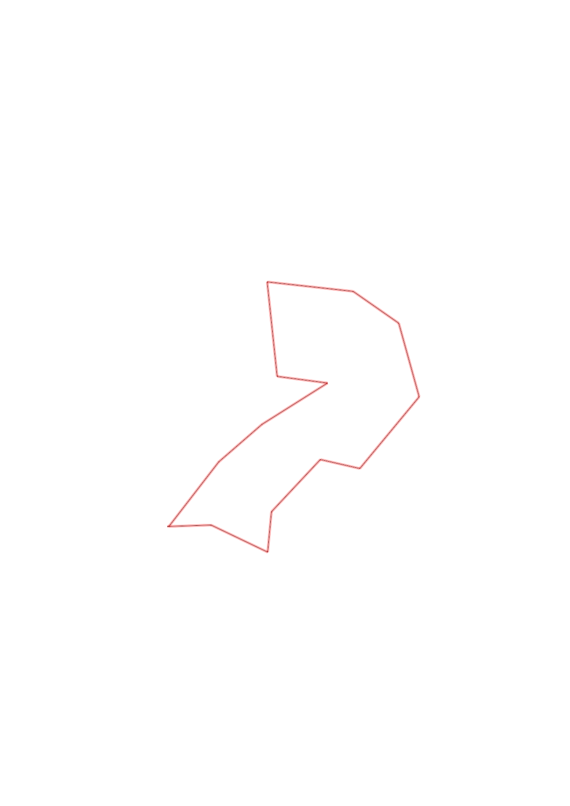
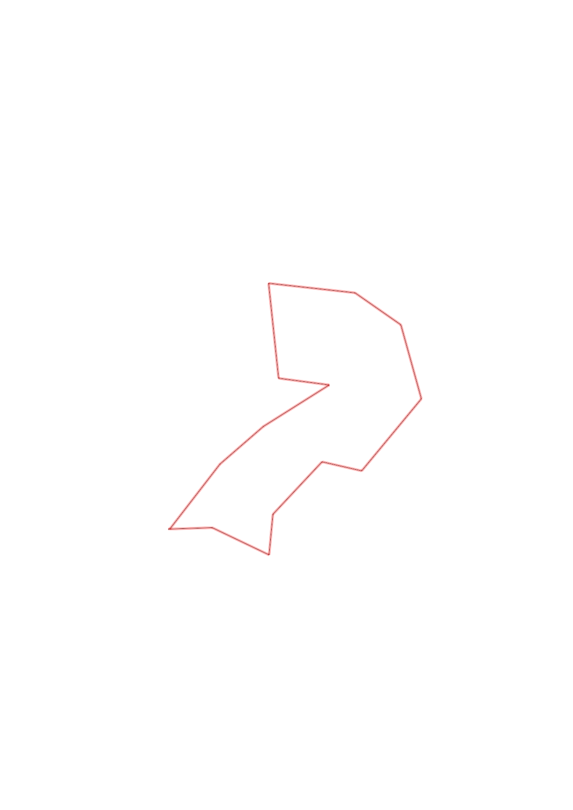

| Control |
Points |
Time Punched |
Distance |
Your Time |
Pace |
Place |
Fastest Time |
Median Time |
% Behind Fastest |
| 63 |
60 |
|
0.24 |
0:08:17 |
34:30 |
11 / 13 |
0:01:34 |
0:02:05 |
428% |
| 54 |
50 |
|
0.35 |
0:05:10 |
14:45 |
6 / 9 |
0:03:08 |
0:04:37 |
64% |
| 80 |
80 |
|
0.22 |
0:06:10 |
28:01 |
10 / 11 |
0:02:23 |
0:03:30 |
158% |
| 48 |
40 |
|
0.4 |
0:02:46 |
06:55 |
3 / 10 |
0:02:29 |
0:03:23 |
11% |
| 60 |
60 |
|
0.22 |
0:02:21 |
10:40 |
3 / 8 |
0:02:05 |
0:02:34 |
12% |
| 81 |
80 |
|
0.52 |
0:06:08 |
11:47 |
8 / 11 |
0:03:21 |
0:04:40 |
83% |
| 46 |
40 |
|
0.42 |
0:04:48 |
11:25 |
4 / 7 |
0:03:46 |
0:04:48 |
27% |
| 61 |
60 |
|
0.31 |
0:04:12 |
13:32 |
4 / 6 |
0:02:54 |
0:04:08 |
44% |
| 34 |
30 |
|
0.48 |
0:03:13 |
06:42 |
2 / 6 |
0:02:42 |
0:03:44 |
19% |
| 36 |
30 |
|
0.53 |
0:03:33 |
06:41 |
3 / 5 |
0:02:45 |
0:03:33 |
29% |
| 59 |
50 |
|
0.28 |
0:02:32 |
09:02 |
1 / 3 |
0:02:32 |
0:02:41 |
0% |
| 91 |
90 |
|
0.43 |
0:03:40 |
08:31 |
2 / 4 |
0:02:43 |
0:04:06 |
34% |
| 41 |
40 |
|
0.32 |
0:04:19 |
13:29 |
4 / 7 |
0:02:38 |
0:04:19 |
63% |
| Finish |
0 |
|
0.45 |
0:02:28 |
05:28 |
1 / 3 |
0:02:28 |
0:04:23 |
0% |
Total Distance Covered: 5.17km
Points Scored: 710
Late Penalty: 0
Final Score: 710
Total Time: 0hours 59minutes 37seconds
Efficiency: 137.33 points/km
 
